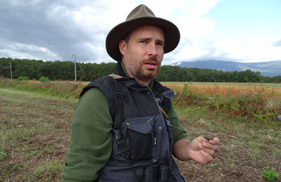

À Viry, un écopont protège la faune

Inauguré ce lundi 30 septembre, après huit mois de travaux, l’écopont de Viry permet de rétablir le corridor biologique entre le Salève, au Sud, et la vallée du Rhône, au Nord. Construit par ATMB et l’État de Genève, le pont est un élément de liaison indispensable pour permettre aux espèces de se déplacer, de se nourrir, de se reposer, de se reproduire ou de conquérir de nouveaux territoires. La réflexion débutée depuis une douzaine d’années a permis d’identifier avec précision les éléments nécessaires au franchissement de cette faune. Le pont, d’une largeur de 25 mètres, représentant six voies de circulation, est dimensionné pour le passage du cerf, animal le plus exigeant pour traverser ce type d’ouvrage. Soigneusement étudié en forme d’entonnoir, il accompagne toutes les espèces dans leur traversée.
Pas de fréquentation humaine
L’État de Genève et ATMB ont investi, à parts égales, 4,3 millions d’euros dans ce projet « qui n’accueillera ni véhicule, ni péage» a souligné Thierry Repentin, président d’ATMB, interpellant ainsi sur la fréquentation humaine qui sera interdite. Le périmètre de ce corridor se situe aussi bien en France qu’en Suisse. Ce secteur dispose d’une grande diversité des milieux agricoles et naturels. Sa valeur biologique est grande avec la présence de nombreuses espèces dont certaines protégées. « Une belle revanche de la nature » a décrit Antonio Hodgers, président du conseil d’État de Genève, poursuivant, « Les routes des uns sont les barrages des autres. »
Un projet transfrontalier dans le cadre des contrats corridors du Grand Genève
La restauration des corridors biologiques est aujourd’hui montrée comme une urgence biologique afin de permettre aux populations d’espèces sauvages, aussi bien animale que végétale, de favoriser notamment le brassage génétique en traversant les obstacles que sont devenus les aménagements humains. Avec l’écopont, situé sur la commune de Viry, dans l’agglomération du Grand Genève, ATMB concrétise une des premières actions emblématiques de son Carnet de Route #Environnement.
Mares, arbres et prairies sèches
Végétalisé, il sera une continuité avec les essences locales et est propice à nourrir et abriter la faune du secteur. ATMB s’est également entourée d’acteurs tels que les collectivités territoriales, le monde agricole, les associations de protection de la nature et de l’environnement, les chasseurs, les écoles afin d’assurer une pleine réussite au fonctionnement de cet édifice. Actuellement nu, l’écopont va bénéficier d’aménagements écologiques, être végétalisé avec des arbres et une prairie sèche créée à partir des graines du projet transfrontalier “fleurs locales”. Les mares, aux entrées, vont être étanchéifiées, des andains posés, pour une restitution complète à la nature en décembre.
ATMB en bref
Détenue à 91,3 % par l’État et les collectivités territoriales, Autoroutes et Tunnel du Mont-Blanc est le concessionnaire du tunnel du Mont-Blanc avec son homologue italien SITMB. ATMB est aussi le gestionnaire de l’Autoroute blanche A40 et de la Route blanche RN 1205.
50 000 conducteurs utilisent chaque jour son réseau de 126 km. Cette société est donc un acteur essentiel de la mobilité dans l’Ain et sur un territoire haut-savoyard, compris entre la Suisse et l’Italie, une région hautement attractive de par ses espaces exceptionnels. Son Carnet de Route #environnement, mis en place en 2017, guide au quotidien l’action de ses 600 collaborateurs pour, en partenariat avec les institutions du territoire, préserver la richesse des espaces naturels et paysagers qui entourent son réseau.
L’expertise des associations de protection de la nature
Parmi les acteurs qui collaborent avec ATMB à la réalisation de l’écopont de Viry, Apollon 74 et France Nature Environnement Haute-Savoie ont apporté leur expertise en tant qu’associations de protection de la nature et de l’environnement.
Des lynx et loups observés
Luc Méry, animateur et chargé de mission à Apollon 14
Luc Méry explique pourquoi ce site a été identifié comme un vrai passage de la faune, permettant une connexion réelle entre la montagne et la plaine, du massif du Salève et la vallée du Rhône : « Depuis l’écopont, si l’on regarde le Salève, nous avons une belle vue, nous avons pratiquement aucune urbanisation assez importante, à part quelques routes. De l’autre côté, le paysage est le même avec peu d’urbanisations. Le vallon de la Laire a un ruisseau exceptionnel qui est un support de déplacement de la faune. Les observations de lynx et de loups dans le secteur confortent le choix de ce site pour l’écopont ». Le responsable associatif d’Apollon 74 précise également que l’État de Genève est coincé entre les zones urbaines et les infrastructures linéaires françaises, tout comme le Salève aussi cerné par les aménagements autoroutiers, hormis le mont Sion. Pour que la faune puisse conquérir de nouveaux territoires, il fallait un passage par-dessus une autoroute.
Chevreuil, sanglier, blaireau, cerf élaphe, chat forestier, muscardin…et le très rare crapaud calamite

{kind=link}
{kind=link}
{kind=link}
{kind=link}
{kind=link}
Christophe Gilles, chargé de mission de France Nature Environnement Haute-Savoie

Christophe Gilles revient sur le suivi de la faune sauvage, débuté afin d’évaluer les peuplements faunistiques qui seront susceptibles d’emprunter l’écopont : « En 2018, lors de la phase avant travaux, nous avions plus de 100 espèces, tous types confondus, des reptiles, des oiseaux, des mammifères, des amphibiens, des insectes, des invertébrés au sens plus large. Nous nous sommes surtout intéressés aux vertébrés terrestres parce que ce sont les plus indicateurs dans le cadre de l’utilisation d’une structure telle que cet écopont de Viry. Nous avons une trentaine d’espèces de vertébrés terrestres, une dizaine de reptiles et d’amphibiens, dont le crapaud calamite qui est très rare. Au niveau mammifère, nous avons un top cinq des espèces présentes avec le chevreuil, le sanglier, le blaireau, le renard et le lièvre brun. Au niveau des animaux à plus forte valeur patrimoniale, nous avons trouvé le cerf élaphe, le chat forestier et le muscardin. »
Les projets du Carnet de Route #Environnement
Si l’écopont de Viry met sur le devant de la scène l’action en faveur de la biodiversité de la société ATMB, les axes de travail en matière environnementale sont nombreux pour la société qui agit également dans les domaines de qualité de l’air, de l’eau, du bruit, de l’énergie, des déchets, des espaces verts et paysages. Tous sont inscrits dans le Carnet de Route #Environnement d’ATMB.
Un aménagement pour la faune à Arenthon
Toujours dans un objectif de rendre perméable l’A40 et de relier les massifs entre eux, ATMB est l’un des maîtres d’ouvrage des mesures du contrat Vert et bleu “Arve-Porte des Alpes”. Cet outil de la Région Auvergne Rhône-Alpes porté par le SM3A, a mis en avant l’importance du maillage écologique du territoire, notamment à Vougy et à Arenthon. Le pont existant au lieu-dit La Papeterie, sur cette dernière commune, qui accueille un faible trafic routier en journée, et qui est dans l’axe du corridor Glières-Môle, bénéficiera donc d’un aménagement écologique pour le passage de la grande faune. (+ photo ecopont papeterie)
Une étude pour un autre écopont à Vougy
À Vougy, le corridor régional Bargy-Môle fait actuellement l’objet d’une étude pour la création d’un écopont dans ce secteur identifié comme stratégique. Ces ponts recevront la signature architecturale de l’écopont de Viry, une corniche avec des empreintes de cerf et de sanglier et un écran en bois. ATMB investit également depuis plusieurs années dans les passages inférieurs comme, par exemple, à Sallanches, où un passage à faune sous l’autoroute A40 a été aménagé, en 2016, en réhabilitant un ouvrage hydraulique pour favoriser le déplacement des petits animaux tels les castors, hérissons, renards, blaireaux… mais aussi les poissons.
La reconquête environnementale se joue également dans le domaine des espaces verts et du paysage avec la participation d’ATMB au programme transfrontalier “fleurs locales”, pour développer une filière de production de graines de fleurs sauvages locales. ATMB met à disposition 11 000 m2 de terrain à Passy, à Saint-Pierre-en-Faucigny et à Bonneville qui sont transformés par des salariés d’entreprises d’insertion, Alvéole et Champs de Cimes, en sites expérimentaux afin de récolter des graines. L’objectif est de contribuer à préserver et retrouver la valeur patrimoniale des prairies des Alpes du Nord. ATMB récompense également ses clients engagés dans une démarche environnementale.
Explorer de nouvelles pistes pour préserver la qualité de l’air
Détenteur d’un Carnet de Route #Environnement et acteur de la mobilité, ATMB s’investit dans l’amélioration de la qualité de l’air, au moment même où ce sujet est une préoccupation majeure des habitants du territoire.
Opération Je covoit’
ATMB se positionne notamment comme l’acteur autoroutier français le plus engagé pour le covoiturage au quotidien et expérimente de nouvelles solutions. La société d’autoroute a donc lancé depuis un an l’opération “Je covoit” Cette s’offre s’adresse aux porteurs de badge de télépéage ATMB. En créant un compte sur Klaxit, Mov’ici ou Id Vroom, partenaires d’ATMB permettant de mettre en relation deux covoitureurs, et en effectuant deux trajets dans le mois sur les 126 km du réseau ATMB, avec plusieurs personnes dans la même voiture particulière, ATMB crédite 5 euros de péage par mois sur le contrat d’abonnement du conducteur.
Une voie réservée aux “covoitureurs”
Afin d’accompagner au mieux les usagers dans ce changement d’habitude de transport, ATMB veille à proposer suffisamment de points de rencontre entre covoitureurs. Le réseau ATMB dispose de plus de 300 places de stationnement dédiées au covoiturage. La société expérimente une voie d’autoroute de 1 km réservée aux covoitureurs entre la France et la Suisse, à la douane de Thônex-Vallard, afin de leur faire gagner du temps.
Des tarifs spéciaux pour les voitures électriques
Pour les particuliers qui ont fait le choix du véhicule propre, ATMB a choisi, depuis le mois de février, de les accompagner dans leur démarche vertueuse en proposant une tarification spéciale sur les véhicules électriques. L’offre Liber-t Mobilitis octroie une remise de 80 % du tarif de péage sur l’A40 (libertmobilitis.atmb.com). Dans un même temps, pour encourager les propriétaires de véhicules électriques à parcourir de longues distances, ATMB accroît le nombre de bornes de rechargement sur les aires de service, comme récemment à Bonneville où huit bornes super chargeurs Ionity ont été installées.
Des expérimentations inscrites dans la loi
Ces nouvelles pratiques environnementales, impulsées par ATMB, ont inspiré un article additionnel à la Loi d’orientation des mobilités, votée en juin dernier. Thierry Repentin, président d’ATMB, explique : « Ces expérimentations menées à titre volontaire sur notre réseau seront rendues obligatoires dans les années qui viennent pour les grands réseaux autoroutiers au moment où ils renouvelleront leurs concessions avec l’État. Les expérimentations d’une petite société deviendront des obligations pour l’ensemble des sociétés opérant sur le territoire national. Nous en sommes assez fiers ».
Une démarche environnementale dans tous les domaines
L’inauguration en 2015 du centre d’exploitation autoroutier ATMB, le premier à être construit selon la démarche Haute qualité environnementale de France, atteste de la volonté ancrée d’ATMB de développer une politique environnementale. La préservation des ressources en eau avec, par exemple un système de récupération des eaux pluviales, la gestion améliorée des déchets qui sont triés et orientés vers les filières de valorisation ainsi que l’utilisation optimisée de l’énergie sont des actions qui permettent de limiter l’impact du bâtiment sur l’environnement. Ces axes se retrouvent aujourd’hui inscrits dans le Carnet de Route #Environnement.
Des écrans acoustiques en bordure d’axes
Afin de poursuivre les efforts de cet investissement immobilier à 17 millions d’euros, les équipes sont formées aux bonnes pratiques. La réduction des consommations d’énergie, d’eau, de production des déchets est un souci quotidien. La qualité de vie des riverains du réseau autoroutier est aussi une préoccupation d’ATMB avec un objectif, protéger les habitations à hauteur de 66 décibels, soit deux décibels en dessous de la valeur limite règlementaire. Déjà 15 km d’écrans acoustiques bordent l’autoroute et la route blanches, concernant vingt communes et 200 habitations. Le programme de construction d’écrans acoustiques prévoit également des murs antibruit à Passy, aux Houches et à Étrembières. Ils seront achevés d’ici 2021. Lorsque la construction d’un écran acoustique n’est pas possible, ATMB retient une autre solution technique, la réalisation de travaux d’isolation directement sur les façades d’habitation.